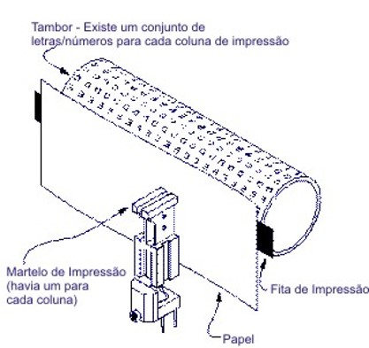

1980-1985
-
Avanços tecnológicos:
- 1984: Impressão Postscript é criada pela Adobe; HP pioneira na tecnologia de
jato de tinta.

- Filmes/desenhos/séries:
- 1982: estreia nos cinemas o filme "E.T, o Extra Terrestre".
- Músicas de sucesso:
- 1982: o cantor norte-americano Michael Jackson faz sucesso mundial com o
álbum Thriller.
- Acontecimentos diversos:
- 1980: Olimpíadas de Moscou (União Soviética). Estados Unidos boicotam os
Jogos Olímpicos por motivos políticos.